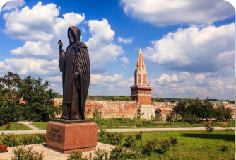

Ekskursiyalarni qidirish va bron qilish
Uzbekistonda va chet ellarda ekskursiyalar va shaxsiy gidlar
Ommabop yo'nalishlar
Biz rus hammda ingilis tilida individual va guruhli turlarni o'tkazamiz.
.svg)
Экскурсии
в Санкт-Петербурге
.svg)
Экскурсии
в Стамбуле
.svg)
Экскурсии
в Дубае
.svg)
Экскурсии
в Калининграде
.svg)
Экскурсии
в Мурманске
Ekskursiyalar



 1.svg)

Sankt-Peterburg san'ati va madaniyati: diqqatga sazovor joylarga sayohat
Ermitaj muzeyiga ikki soatlik mini-guruhli sayohat — Qishki saroy tarixi va G'arbiy Yevropa rassomlarining durdona asarlari.
.svg)
Sankt-Peterburg mahalliy aholi nigohida: shaxsiy turistik tajriba
Ermitaj muzeyiga ikki soatlik mini-guruhli sayohat — Qishki saroy tarixi va G'arbiy Yevropa rassomlarining durdona asarlari.
.svg)
Kronshtadt xazinalari: me'moriy va dengiz yodgorliklari bo'ylab sayohat
Ermitaj muzeyiga ikki soatlik mini-guruhli sayohat — Qishki saroy tarixi.

Kamenni oroliga sayohat: Shahar diqqatga sazovor joylarining sehri
Ermitaj bo'ylab ikki soatlik mini-guruhli sayohat - Qishki saroy tarixi.
.svg)
Rossiya imperiyasining sahna ortida: Buyuk Gertsog Mixail saroyiga sayohat
Ermitaj bo'ylab ikki soatlik mini-guruhli sayohat - Qishki saroy tarixi.

Obuna bo'lish
bizning axborot
byulletenimizga
Qulay siz uchun xabar bериw
Ijtimoiy tarmoqlarga o'tishda siz avtomatik ravishda maxfiylik siyosati bilan rozilik bildirasiz